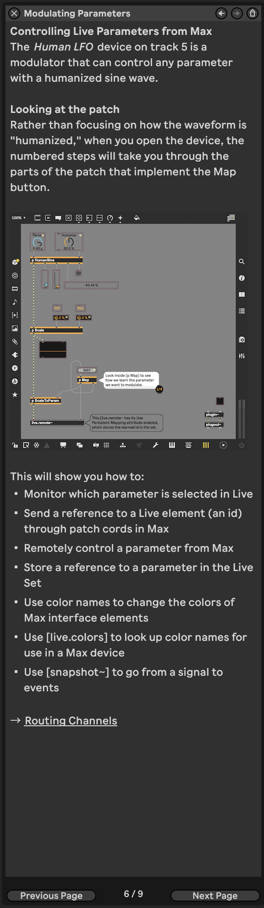
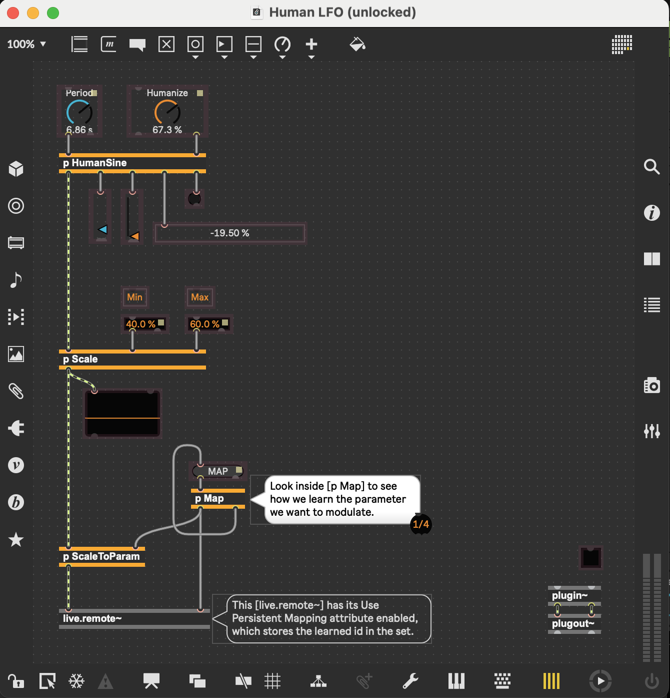
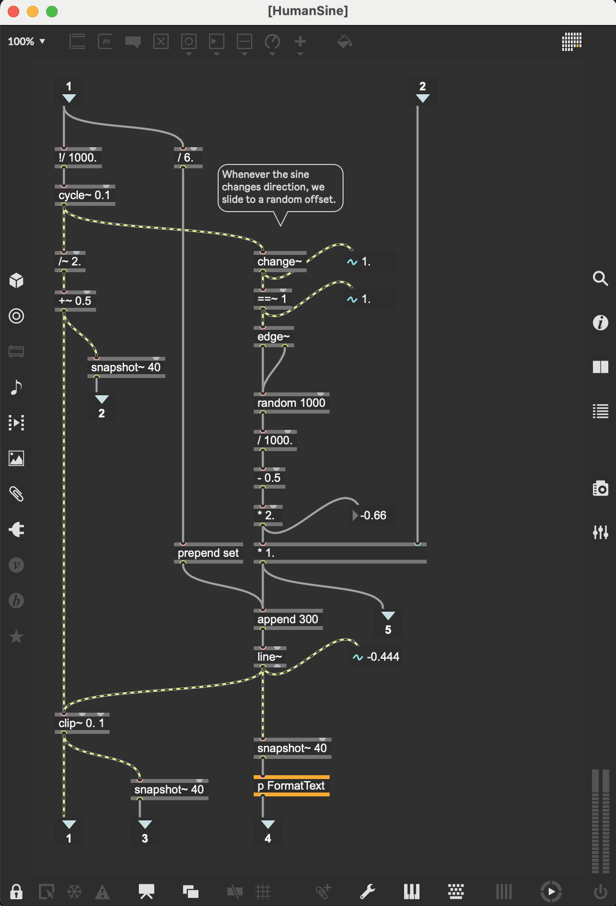

Ableton/Packs/building-max-devices/02_M4L_Intro/06_Modulating_Parameters
Ableton/Max for Live/Audio Effect/Human LFO - Track 5 Modulating
Tutorial
Controlling Live Parameters from Max
- Device: Ableton/Max for Live/Audio Effect/Human LFO
- Patch Highlights:
- Steps to Explore the Patch:
Key Max Objects in the Patch
- c74/M4L/obj/live.remote~ live.remote~ Reference - Max Documentation
- c74/msp/obj/snapshot~ snapshot~ Reference - Max Documentation
- c74/max/obj/dict dict Reference - Max Documentation
- c74/M4L/obj/live.colors live.colors Reference - Max Documentation
Objects Used in This Device

- Additional Reading:
- c74/M4L/Ref/Live Audio Effects Creating Audio Effect Devices
Inside the HumanLFO Patch

Key Max Objects
- inputs to
p HumanSine p HumanSinepatcher
Key Max objects
- left inlet
c74/max/obj/rdiv
!/rdiv Reference - Max 8 Documentation - convert ms to Hzc74/msp/cycle~ generates the cosine with specified freq from -1 to 1
- cycle~ Reference - Max 8 Documentation
- Sinusoidal oscillator
Description
- generate a periodic waveform
- The default waveform is one cycle of a cosine wave.
- You can also use the wave~ object, which offers additional flexibility though slightly less optimization.
Examples
- interpolating oscillator that reads repeatedly through one cycle of a waveform, using a wavetable. The wavetable can be changed using the 'set' message. This wavetable may be of any size, but historically was limited to 512 samples.
Arguments
frequency
Displayed: numberbuffer-name
Displayed: symbol- Optional
- The name of a c74/msp/buffer~
- buffer~ object used to define the oscillator's wavetable. If a frequency argument is present, the
buffer~name follows the frequency. If nobuffer~name is given,cycle~uses an internal 64-bit 16K cosine wavetable.
- buffer~ object used to define the oscillator's wavetable. If a frequency argument is present, the
Output
- cycle~ Reference - Max 8 Documentation
- left side
- c74/msp/div~ 2: make it so amplitude goes from -0.5 to 0.5
- div~ Reference - Max 8 Documentation
- divide the amplitude of the cycle by 2 (make it half as "loud")
- c74/msp/plus~ 0.5: make it so amplitude goes from 0 to 1
- c74/msp/div~ 2: make it so amplitude goes from -0.5 to 0.5
- left inlet
- inputs to
My #Questions
- in my own words, what is this LFO doing?
logbook- The LFO is adjusting the filter cutoff Ableton/Macro parameter Ableton/Instrument/Rack/Bass/106 Bass
- which adjusts Ableton/Instrument/Analog/106 Bass
- it's mapped to Ableton/Instrument/Analog/Filter/1/Freq
- #Learned that by clicking the Map button, I can see the mapping in Ableton from the macro button to the actual thing it's adjusting in the instrument.
- it kind of looks like Filter Cutoff is somehow mapped twice to F1 Freq, with two different values for min and max ... ?
- ok so there are actually two copies of the 106 bass in this instrument rack, each with their own filter 1 frequency cutoff
- it's mapped to Ableton/Instrument/Analog/Filter/1/Freq
- The LFO is going between 40% and 60% on the Filter Cutoff dial.
- The bass 01 has -0 dB
- the bass 02 has -3.0 dB
- so the two copies have symmetrical detunes, which I guess is kind of a "unison" effect.
- I wonder why they chose to do that rather than just using a unison effect.
- also, i see that bass 01 has lp12 and bass 02 has lp24, and the max for one of them is 5.8k while themax for the other is 22.0k, ... but I can't really tell from the macro mappings detail which one is which. carefully designed, but it's a bit beyond me.
- which adjusts Ableton/Instrument/Analog/106 Bass
- The LFO is adjusting the filter cutoff Ableton/Macro parameter Ableton/Instrument/Rack/Bass/106 Bass
- what does it mean for an #LFO to be "humanized"
logbook
- in my own words, what is this LFO doing?